오늘 날씨 · 강수 · 농산물 시세
건강한 흙에서
건강한 작물이 자랍니다
(주)에이블팜은 식물 영양 연구와 제조에 집중하는 그린바이오 기업입니다. 실험실이 아니라 밭에서 검증한 배합을, 누구나 현장에서 쉽게 쓸 수 있는 액상·입제 제형으로 완성합니다.
육묘·정식부터 수확기 마무리까지, 작물과 생육 시기에 맞춘 처방으로 기후변화 속에서도 안정적인 수량과 품질을 돕는 것이 우리의 일입니다.
가산아스크타워 15층 1541호
{{ hiHeadline }}
{{ hiSummary }}
제품 소개
카드를 누르면 제품 상세페이지로 이동합니다. 사진·설명은 이후 채워집니다.
토양에서 시작해,
토양에서 증명한 영양
(주)에이블팜의 배합은 실험실이 아니라 논밭에서 시작합니다. 작물과 생육 시기, 재배 환경을 확인한 뒤에야 제형이 됩니다.
농가의 한 해 수확과 수익이 곧 우리 제품의 평가 기준입니다 — 옆의 사진들은 실제 사용 포장과 재배 현장의 모습입니다.
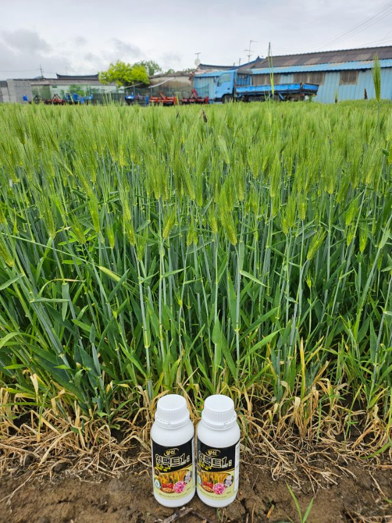
보리 · 임팩트원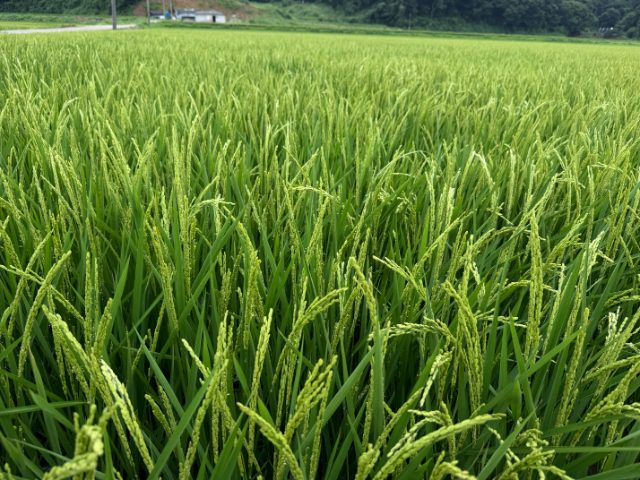
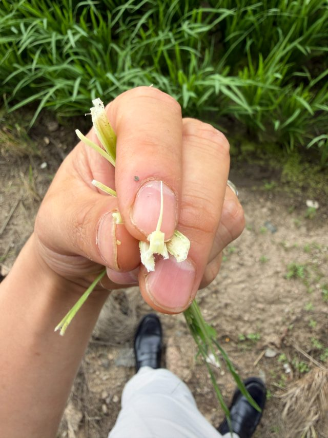
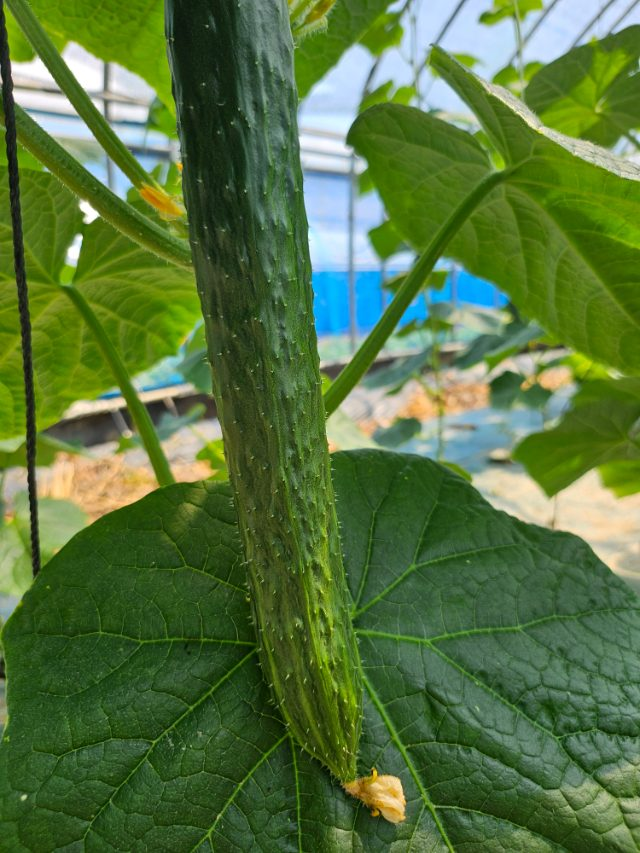
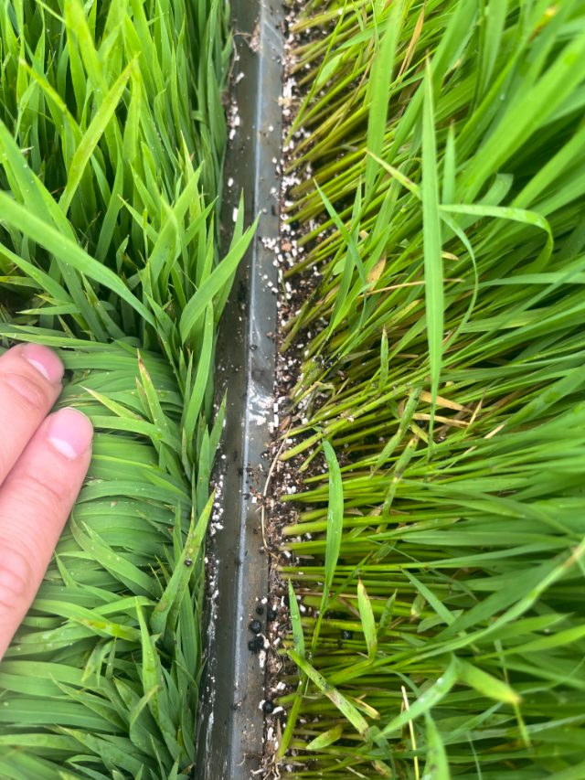
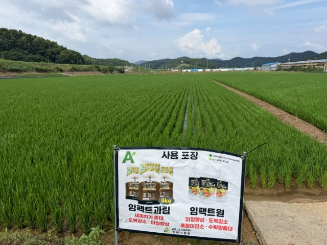
벼 사용 포장 · 임팩트과립 & 임팩트원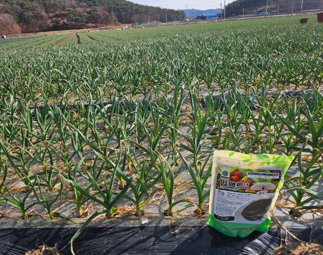
마늘 · 임팩트과립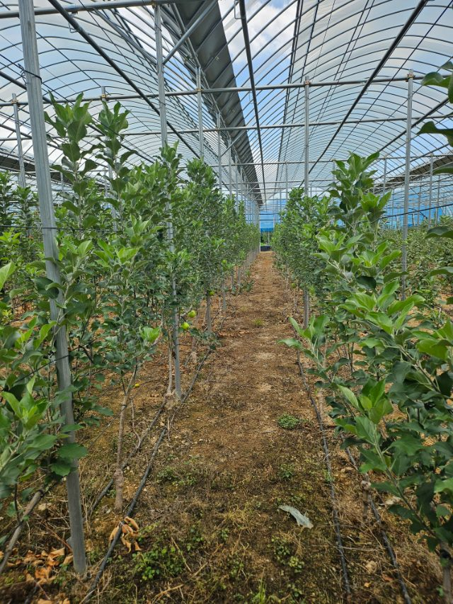
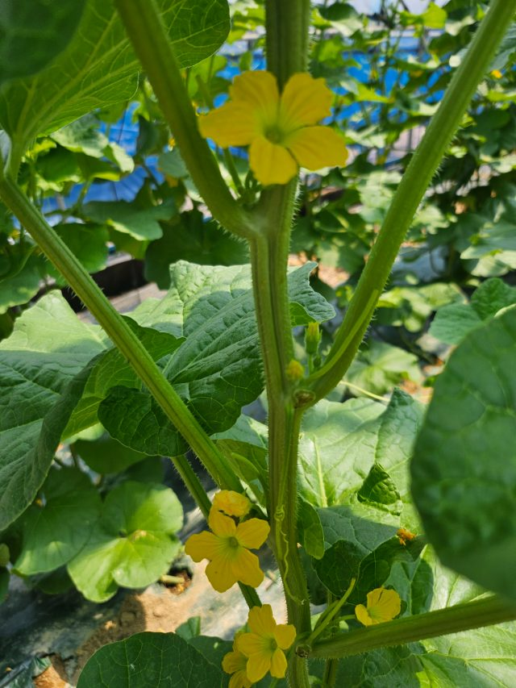
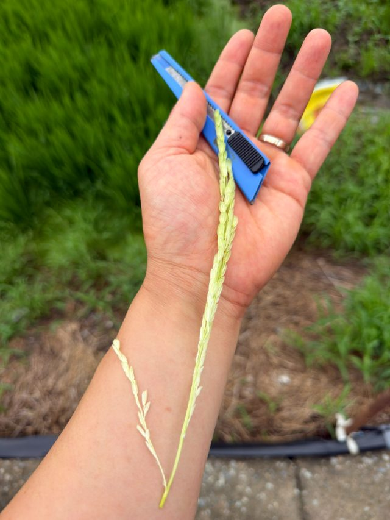
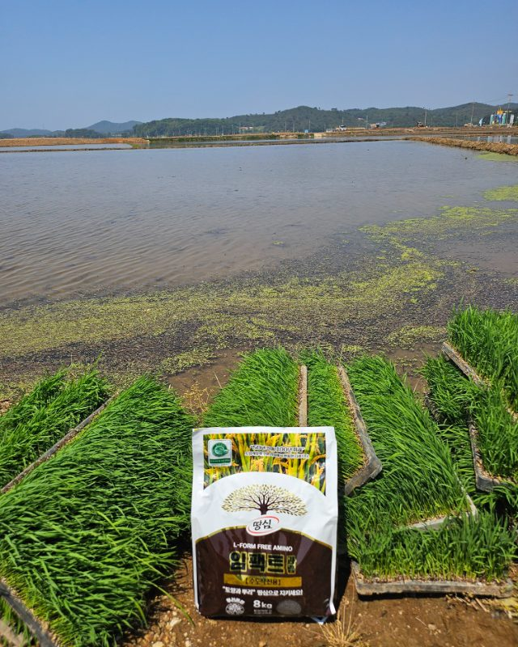
못자리 · 임팩트과립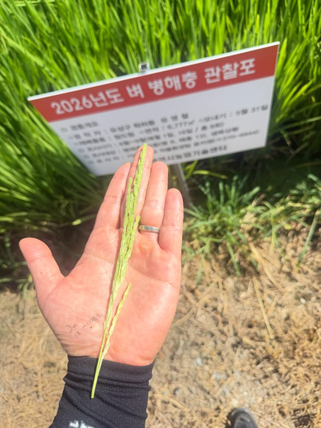
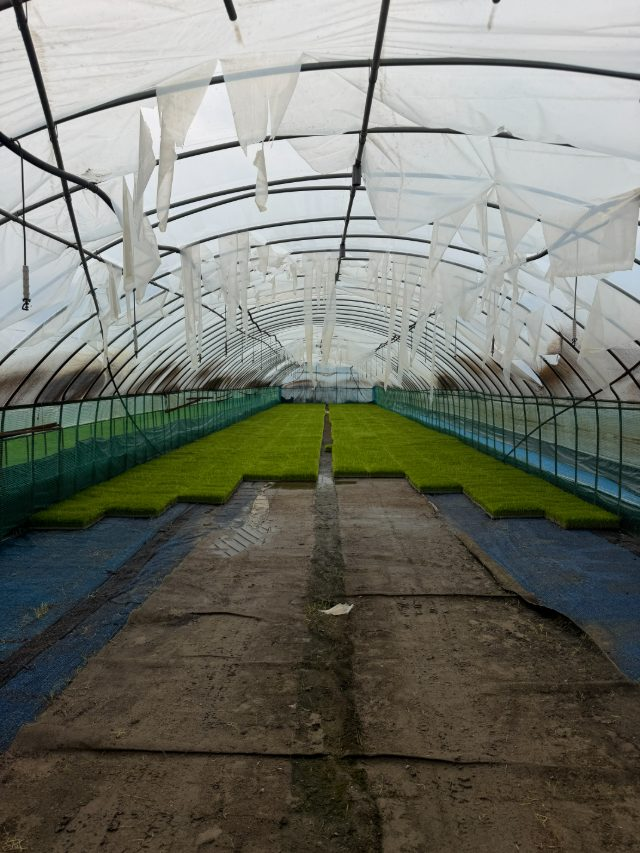
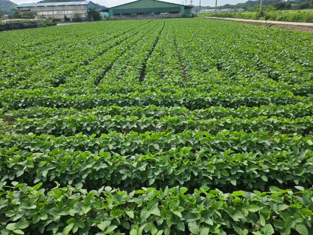
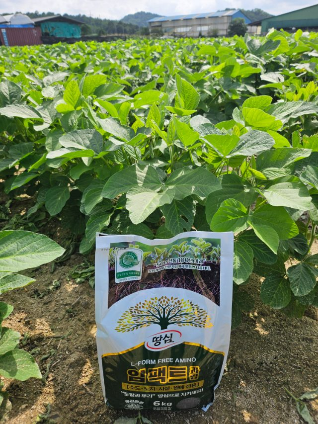
자주 묻는 질문
관주로도 사용할 수 있나요?＋
제품에 따라 엽면살포와 관주 모두 사용 가능합니다. 품목별 희석 배수와 300평당 관주량은 각 제품 상세페이지에 안내되어 있습니다.
드론(항공) 방제에 사용 가능한가요?＋
임팩트규산·임팩트규산골드 등 항공방제에 사용 가능한 제품이 있습니다. 사용 방식과 희석 배수는 제품별로 다르니 상세페이지 또는 고객센터에서 확인해 주세요.
유기농업자재 공시 제품인가요?＋
임팩트골드(공시-2-3-802), 임팩트과립(공시-2-3-792) 등 공시를 취득한 제품을 보유하고 있습니다. 제품별 공시 여부는 상세페이지에서 확인하실 수 있습니다.
제품 구입 문의와 사용방법 상담은 어디로 연락하나요?＋
전국 지역 대리점 및 농자재 판매처를 통해 공급됩니다. 담당 지역으로 직접 연락 주시면 가까운 구입처와 작물별 사용법을 안내해 드립니다.
고객센터 02-858-6229 (평일 09:00–17:00)
작물에 맞는 처방이 궁금하세요?
작물·재배 환경에 맞는 제품과 사용법을 전문가가 안내해 드립니다
문의하기 →{{ pname }}
{{ pdesc }}
{{ ptag }}
{{ rSummary }}
{{ rCrops }}
{{ f.q }}＋
{{ f.a }}
{{ pdesc }}
※ 상세 설명은 순차적으로 업데이트됩니다. 자세한 사용법은 02-858-6229로 문의해 주세요.
다른 제품 보기
전체 제품 →궁금한 점을 남겨주세요
작물·재배 환경에 맞는 사용법을 담당자가 직접 답변해 드립니다.
(주)에이블팜 제품 전체 목록
고온·가뭄·침수·병해·도복 등 기후 피해에 대응하는 액상 영양제와 유기농업자재입니다. 작물과 생육 시기에 맞는 처방은 고객센터 02-858-6229 또는 지역 담당자에게 문의해 주세요.
- 구근짱 · 500ml · T/R률 개선 · 구근 비대
양파·마늘·감자 등 구근작물 전용. T/R률을 개선해 구근을 굵고 단단하게 키웁니다. - 산소탱크 · 500ml · 빠른 산소공급 · 뿌리 발근촉진
뿌리에 빠르게 산소를 공급해 침수·과습 피해를 줄이고 새뿌리 발근을 돕습니다. - 속딴딴 · 500ml · 세포벽 강화 · 무름 예방
세포벽을 단단하게 만들어 무름 증상을 예방하고 작물의 저장성과 상품성을 높입니다. - 아미닥터 · 500ml · 저항성 증대 · 생리장해 경감
세균성 병원체에 대한 저항성을 높이고 새뿌리 발달과 생리장해 경감을 돕는 아미노산 영양제. - 아미루트 · 500ml · 뿌리발달 · 복합생리활성 · 내병성
L-form 유리아미노산 함유. 뿌리 발달과 복합 생리활성으로 작물 내병성을 끌어올립니다. - 엔피씰 · 500ml · 조직강화 · 수량증대 · 도복경감
천연 생리활성물질(특허) 함유. 식물체 조직을 강화해 수량과 미질을 높이고 도복을 줄입니다. 드론 사용 가능. - 엔피칼마 · 500ml · 조직·잎기능 강화 · 무름 경감
칼슘·마그네슘을 동시에 흡수시켜 세포막 생성과 뿌리 발육을 돕고 무름 증상을 줄입니다. - 원팩트 · 10kg · 토양 경운 처리 전용 입제
노지 및 시설작물 토양 경운 처리 전용 입제. 토양개량·조기수확·저장성 향상·기후피해 경감까지 한 번에. - 유니NK칼 · 10kg · 15-0-15 +17CaO +붕소
100% 수용성 고칼슘 복합비료. 질소·칼륨에 칼슘·붕소를 더해 균형 잡힌 양분을 공급합니다. - 유니NK칼마 · 10kg · 13-0-10 +5Mg +12CaO
100% 수용성 칼슘·마그네슘 복합비료. 세포 강화와 균형 잡힌 미량요소 공급에 적합합니다. - 임팩트규산 · 500ml · 식물체 조직강화 · 뿌리발달
식물체 조직을 튼튼하게 하고 뿌리 발달을 촉진하는 규산 액제. 드론 방제에도 사용 가능합니다. - 임팩트규산 골드 · 500ml · 병해관리용 · 항공방제 · 유기농업자재
병해 관리에 특화된 규산 골드. 항공방제(드론)용으로 사용 가능한 유기농업자재입니다. - 일소가드 · 1L · 일소피해 경감 · 잎 기능 재생
고온·강광으로 인한 일소(햇볕 데임) 피해를 경감하고, 천연 보호막과 보습으로 잎 기능 재생을 돕습니다. - 임팩트 · 500ml·3L · 냉해 · 개화 · 수정 · 다수확
L-form 유리아미노 함유. 냉해 대응과 개화·수정·다수확을 돕는 공동방제 전용 아미노 액제(500ml·3L). - 임팩트골드 · 500ml·5L · 토양개량 · 작물생육용 유기농업자재
혈액발효액·목초액·해조류추출물을 함유한 토양개량 및 작물생육용 유기농업자재(500ml·5L, 공시-2-3-802). - 임팩트과립 · 2·6·8kg · 토양개량 · 뿌리 튼튼 입제
다공질성 광물질(베이직슬래그) 함유로 토양의 입단구조를 개선하는 과립형 유기농업자재(2·6·8kg, 공시-2-3-792). - 임팩트원 · 500ml·3L · 개화 · 수정 · 다수확 · 도복경감 · 냉해
특허 천연 생리활성물질 함유. 개화·수정·다수확과 도복경감·냉해 대응을 돕는 프리미엄 액제(500ml·3L). - 칼슘탄 · 500ml · 킬레이트 칼슘 · 세포막 강화
흡수율이 높은 킬레이트 칼슘으로 세포막을 강화해 과실·잎의 조직을 튼튼하게 만듭니다. - 토탈그로 · 500ml · 균형 성장 · 종합 생리활성
L-form 유리아미노 함유. 작물의 균형 잡힌 성장과 종합 생리활성을 돕는 데일리 영양 액제. - 파이널솔루션 · 500ml · 과실크기 · 착색 · 경도 · 조기수확
수확기 마무리 전용. 과실 크기·착색·경도를 높이고 조기수확과 환경 스트레스 예방을 돕습니다. - 하이그로퍼 골드 · 20kg · 토양개량 · 작물생육용 유기농업자재
노지·시설 전반에 쓰는 토양개량 및 작물생육용 유기농업자재. 측조시비 가능(20kg, 공시-2-3-900). - 하이슈거 · 500ml · 당도 · 착색 및 활력 증진
특허 천연 생리활성물질 함유. 과실의 비대·성숙과 당도·착색을 높여 상품성을 끌어올립니다. - 황실 · 500ml · 병충해 저항성 증진 · 조직강화
유황과 규산을 함유해 병충해 저항성을 높이고 식물체 조직을 강화하는 특허 생리활성 액제. - 히미업 · 500ml · 생리장해 해결 · 엽록소 기능 강화
L-form 유리아미노 함유. 생리장해를 해결하고 엽록소 기능 강화와 복합 생리활성을 돕습니다.
(주)에이블팜 · 전국 대리점 공급 · 유기농업자재 공시 제품 보유(임팩트골드 공시-2-3-802, 임팩트과립 공시-2-3-792) · 전화 02-858-6229 · 팩스 02-6442-6229 · 평일 09:00–17:00